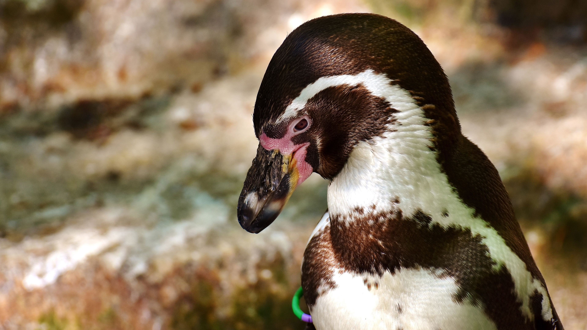
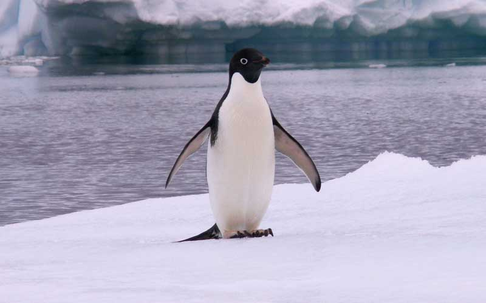

El pinguino
¿AVES O PECES?
Los pingüinos pertenecen a un grupo de aves que no vuelan, tienen las alas adaptadas para la natación. Esto hizo pensar antiguamente, que se trataba de peces. Todos ellos pertenecen a una misma familia, Spheniscidae. El nombre original de pingüino correspondía a un pájaro de las islas del Atlántico norte, extinguido en 1844, y no emparentado con los pingüinos australes.
¿CÓMO SON LOS PINGÜINOS?
Tienen el vientre claro y el dorso oscuro, como sistema de camuflaje para confundirse en el agua con la claridad de la luz del sol, o la oscuridad del fondo marino. En tierra firme son poco ágiles y andan erectos, tambaleándose, con las alas abiertas para mantener el equilibrio. Tienen 4 dedos en cada pata: 3 anteriores gruesos y unidos por una membrana interdigital, y 1 dedo posterior pequeño y separado. Están recubiertos de plumas; las del cuerpo son reducidas y tienen aspecto de escama, las de la cola están modificadas y las usa como timón para la navegación y para saltar fuera del agua.
¿COMO SE ALIMENTAN?
Se alimentan de diferentes peces, calamares y de krill, unos pequeños crustáceos parecidos a las gambas, que forman parte del plancton. Su lengua espinosa les permite sujetar a las presas, que tragan enteras, ya que no tienen dientes. Los leopardos marinos, los petreles, las orcas y los tiburones son algunos de sus depredadores.
COMPORTAMIENTO Y REPRODUCCIÓN
Los pingüinos pasan la mayor parte del tiempo en grupos denominados colonias, a las cuales vuelven cada año desde el océano para criar. Cuando encuentran a su pareja se ponen cara a cara con los picos hacia el cielo y las alas hacia atrás y emiten unos graznidos, que son propios de cada pingüino y que les ayuda a localizarse dentro de la colonia. Son ovíparos, como el resto de aves. Cada año, los pingüinos emprenden una marcha hasta su lugar de nacimiento, donde ponen los huevos cuidadosamente. Generalmente, a principios de octubre la hembra pone un par de huevos que tardan unos 40 días en eclosionar. Habitualmente solo una de las dos crías sobrevive. Mientras uno de los progenitores protege a los polluelos, el otro va al mar para alimentarse, y así, van turnándose. La mayoría de pingüinos construyen el nido entre el macho y la hembra lejos del agua, bajo arbustos, en cuevas o en lugares abiertos. En algunos casos en que no lo pueden construir, cargan el huevo sobre las patas durante unas 6 semanas. Un repliegue de la piel del vientre cubre el huevo o el polluelo para protegerlo y calentarlo. Los polluelos nacen sin plumas, por esta razón permanecen en los nidos hasta desarrollar una primera capa de plumas muy finas, el plumón, que los protege del frío. Cuando pescan, por ejemplo, unos cuantos adultos cuidan a los más jóvenes y el resto, pesca en grupo.
DONDE VIVEN LOS PINGUINOS
Estas aves solo habitan en el Hemisferio Sur, mientras su presencia en el Hemisferio Norte, no se relaciona con el ambiente natural sino con el cautiverio. Las poblaciones de pingüinos se encuentran en aguas costeras del continente Antártico, en Nueva Zelanda, Australia, Ecuador, Perú, Argentina, Chile e islas Malvinas. No obstante, también viven en zonas más tropicales como las Islas Galápagos, Sudáfrica y América del sur, con la corriente de Humboldt. Asimismo, son aves marinas sociables por lo que suelen vivir en colonias, las cuales aumentarán sus miembros durante la nidificación. Antes de esta fase, los pingüinos realizan un cortejo, en el cual, el macho llama la atención de la hembra inflando su pecho, y estirando la cabeza hacia atrás, mientras mueve las alas y emite sonidos similares a rebuznos.
Características del tanque de los pingüinos (pingüinera)
| Temperatura del agua | 17˚C |
| Temperatura del aire | 17˚C |
| Volumen de agua | 110.000 l |
| Recirculación y filtraje del agua | 4 veces/hora |
| Renovación del aire | 10 veces/día |
| Número de pingüinos | 21: 11 machos y 10 hembras (2018) |
| Iluminación | Varía gradualmente para imitar el ciclo diario de luz |
| Especie | Pingüino de Humboldt (Spheniscus humboldti) |